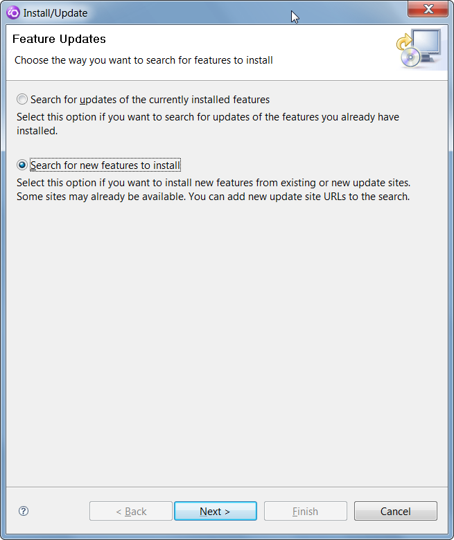
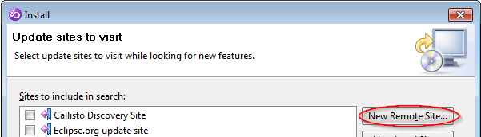
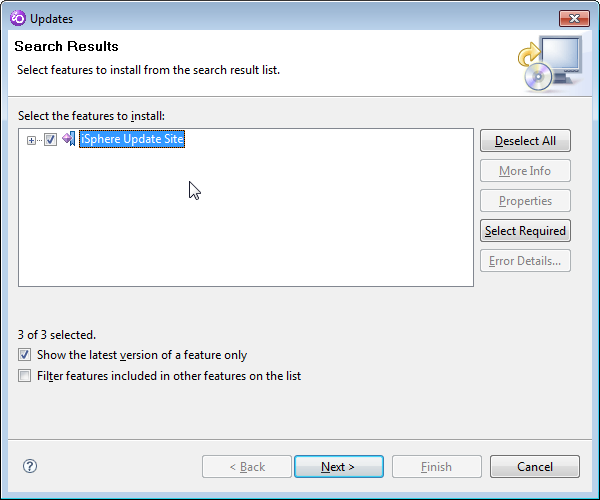
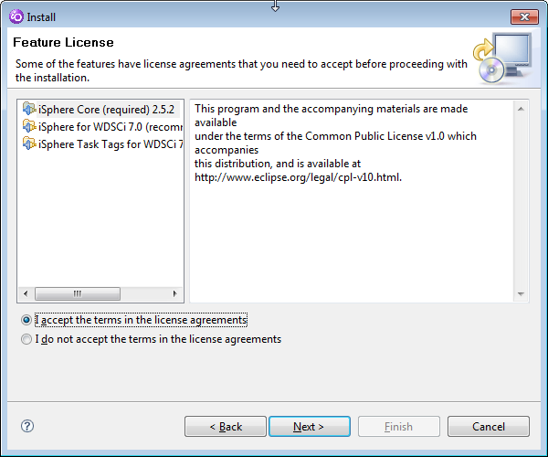
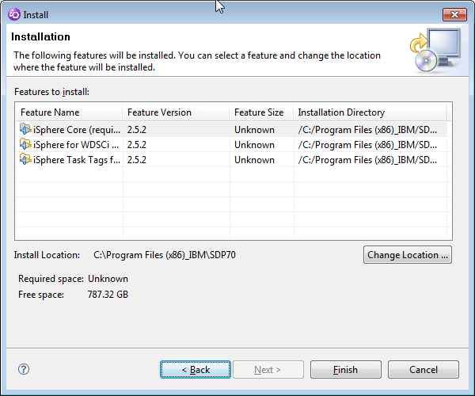

| Make sure that you have administrator rights if you
installed WDSCi into c:\Program Files. Otherwise you may encounter strange error messages such as 'No repository found containing ...' when attempting to install the iSphere plug-in. |
| Some people complained about various dependency errors, which could be solved by deselecting all update sites, leaving only iSphere checked. |
Please consider to install RDi to c:\IBM\... to avoid problems when installing plug-ins.
Using the iSphere Update Site requires the least effort to install the iSphere plug-ins for WDSCi 7.
From the main menu, select "Help > Software Updates > Find and Install..." to start the "Install/Update" dialog. (It may take a minute or longer for WDSCi to find existing update sites.)
In the "Install/Update" dialog" click "Search for new features to install" and click the [Next >] button:

Click the [New Remote Site...] button

Complete the "New Update Site" popup window:

Accept the terms of the license agreement.

Finally, click [Finish]

You may see a warning "You are about to install an unsigned
feature. You may choose to install the feature or cancel its
installation." You can ignore it and just click [Install All].
In this approach you manually download the plug-ins once from
SourceForge. The actual installation of the plug-ins can then be done
without access to the Internet. You might use this approach if you
have multiple developers and limited internet bandwidth.
Go to the iSphere download page at SourceForge and download the zip
file for your environment.
Then follow these steps to create your local update site:
This approach is similar to using a local update directory,
except that you don't unpack the zip file.
Go to the iSphere download page at SourceForge and download the zip
file for your environment.
Then follow these steps to create your local update archive:
In
[Name] enter "iSphere Update Site"
In [URL] enter Click [Next >]
Click [Next >]
Install Using a Local Update Directory
Install Using a Local Update Archive